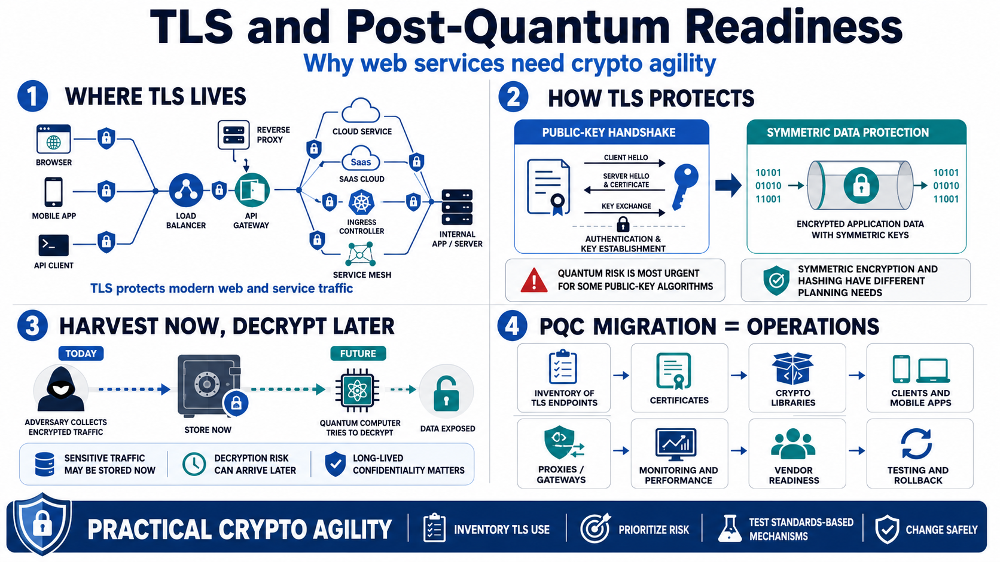

Why PQC Matters for TLS and Web Services
Connecting to LMS... Progress: in progress

Narration
Transport Layer Security is one of the basic trust mechanisms behind modern web communication. When a browser connects to a site, an application calls an API, a mobile app talks to a backend, or one service calls another inside a cloud environment, TLS is often the protocol that provides confidentiality, integrity, and authentication. It also appears at load balancers, API gateways, reverse proxies, SaaS platforms, ingress controllers, service meshes, and internal applications that never face the public internet.
Post-quantum cryptography matters here because TLS relies on public-key cryptography during important parts of the handshake. Public-key mechanisms help authenticate the server and establish key material. Once the handshake has done its job, TLS commonly uses symmetric encryption to protect the application data moving across the connection. That split is important: the quantum concern is most urgent for some public-key algorithms, while symmetric encryption and hashing have different planning considerations.
The risk is not limited to a future outage. Harvest-now, decrypt-later scenarios matter when traffic is sensitive for years. An adversary may collect encrypted network traffic today and attempt to decrypt it later if the public-key protection used during the session becomes breakable. This is especially relevant for regulated information, government data, sensitive business records, intellectual property, and enterprise API traffic where confidentiality has a long lifetime.
For TLS and web services, PQC is a migration and operations problem, not just a cryptography problem. The work touches endpoint inventory, certificates, libraries, clients, mobile apps, proxies, monitoring, performance, change management, vendor readiness, and rollback planning. A useful program treats PQC as practical crypto agility: understand where TLS is used, prioritize based on risk, test standards-based mechanisms, and make change possible without breaking critical services.